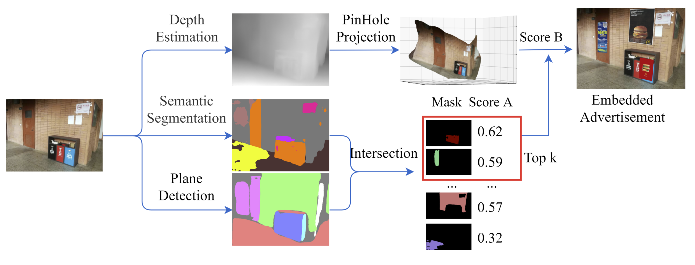
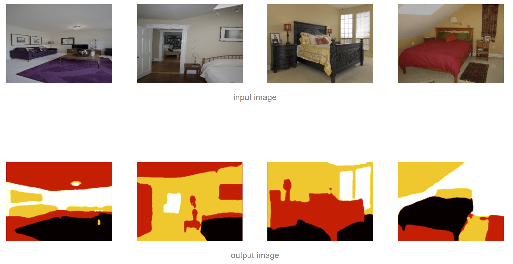
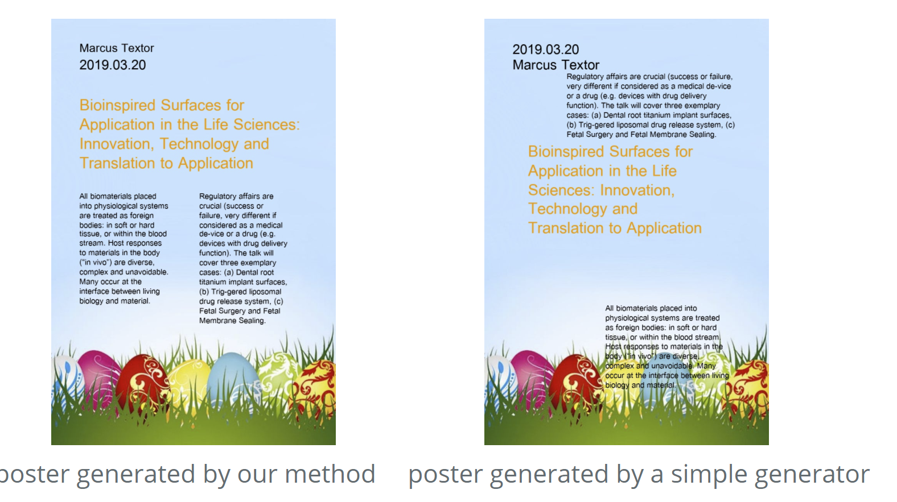
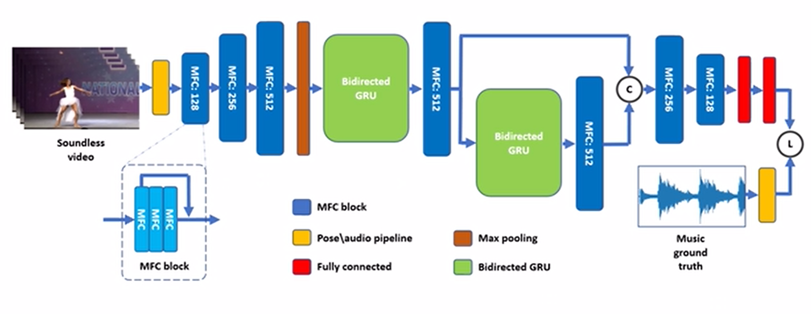
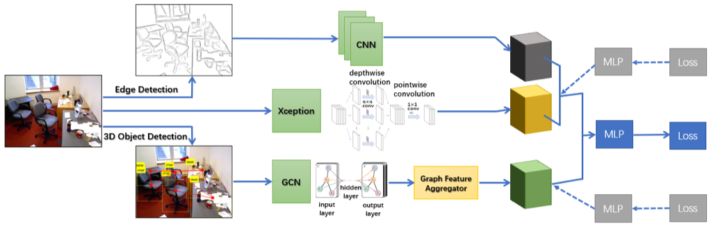

| End-to-End Texture-Aware and Depth-Aware Embedded Advertising for Videos |
Jiasen Li |
Xun Gong |
Boning Li |
Augmented Advertisement |
|
 |
| Single Image Furniture Placement by Indoor Commonality Relationships |
Yating Luo |
Xianhan Mao |
Yifan Xu |
SIFP |
|
|
| Multi-task Driven Network for Indoor Layering Predictionwith Human-in-loop |
Yuhuan Yang |
Qingyao Xu |
Han Lu |
MD Net |
|
 |
| Learning to Generate Lecture Posters |
Yuncong Liu |
Haoyu Ling |
Luoxuan Li |
Poster Generator |
|
 |
| A Deep Network for Human Video and Audio Matching |
Junqi Liu |
Peiming Yang |
Lesheng Jin |
DVAMN |
|
 |
| A Novel Framework for Natural Language Understanding Based Image Enhancement |
Wenxin Zheng |
Rui Zhu |
Maosheng Zhu |
NLP Image Enhancement |
|
 |
| COOL: Contour and Object-Oriented Learning for Indoor Cleanliness Classification |
Sucheng Qian |
Zhaoyu Li |
Weibang Jiang |
COOL |
|
 |